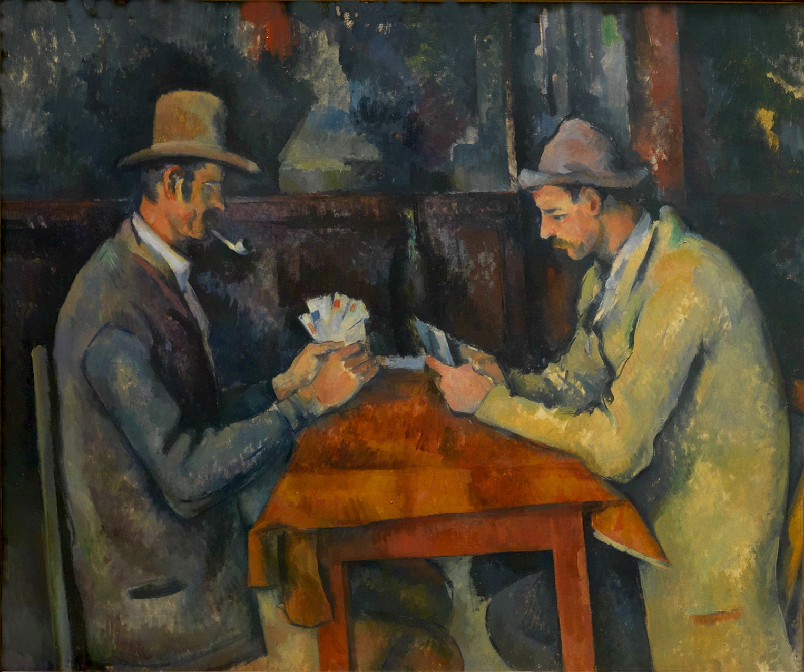

Paul Cézanne(1839-1906)
 [ The Card Players, 1892-1895 ]The Card Players is a series of oil paintings by the French Post-Impressionist artist Paul Cézanne. Painted during Cézanne's final period in the early 1890s, there are five paintings in the series. The versions vary in size, the number of players, and the setting in which the game takes place. Cézanne also completed numerous drawings and studies in preparation for The Card Players series. One version of The Card Players was sold in 2011 to the Royal Family of Qatar for a price estimated at $250 million. It was thought to be sold to the Davis family out of Florida in the United States for an estimated US$225 million. ($284.1 million today) and possibly as high as $300 million ($341 million today), either price signifying a new mark for highest ever price for a painting, not surpassed until November 2017.
 [ The Bathers, 1906 ]
[ The Bathers, 1906 ]
The Bathers (French: Les Grandes Baigneuses) is an oil painting by French artist Paul Cézanne first exhibited in 1906. The painting, which is exhibited in the Philadelphia Museum of Art, is the largest of a series of Bather paintings by Cézanne; the others are in the Museum of Modern Art in New York City, National Gallery, London, the Barnes Foundation, Philadelphia, and the Art Institute of Chicago. Occasionally referred to as the Big Bathers or Large Bathers to distinguish it from the smaller works, the painting is considered one of the masterpieces of modern art, and is often considered Cézanne's finest work.
With each version of the Bathers, Cézanne moved away from the traditional presentation of paintings, intentionally creating works that would not appeal to the novice viewer. He did this to avoid fleeting fads and give a timeless quality to his work, and in so doing paved the way for future artists to disregard current trends and paint pieces that would appeal equally to all generations. The abstract nude females present in Large Bathers give the painting tension and density. It is exceptional among his work in symmetrical dimensions, with the adaptation of the nude forms to the triangular pattern of the trees and river. Using the same technique as employed in painting landscapes and still lifes, Large Bathers is reminiscent of the work of Titian and Peter Paul Rubens. Comparisons are also often made with the other famous group of nude women of the same period, Picasso's Les Demoiselles d'Avignon.